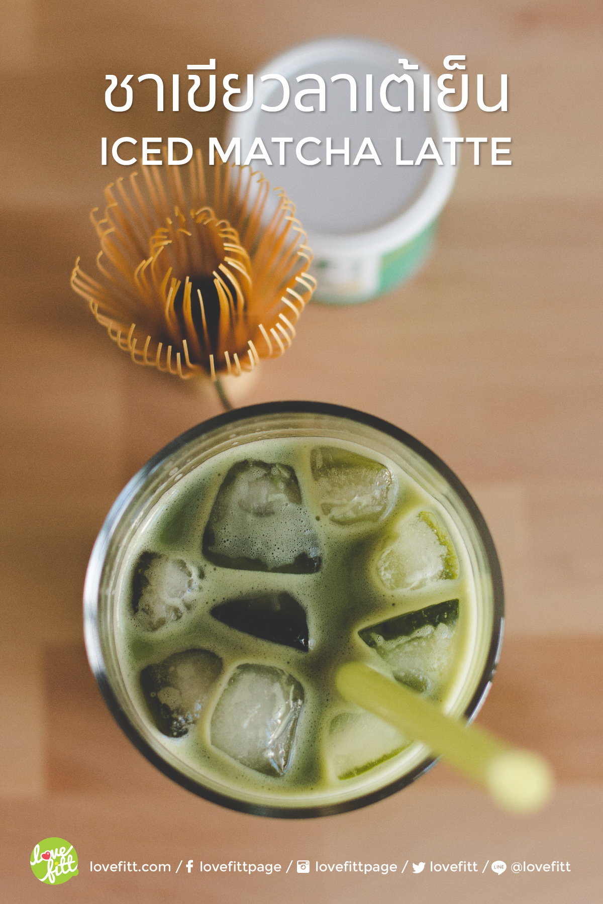

ชาเขียวลาเต้เย็น สูตร Healthy แค่ปรับเปลี่ยนส่วนผสมเพียงเล็กน้อย เลือกผงมัชฉะที่มีคุณภาพ กับวิธีการทำที่เรียบง่าย สูตรนี้บอกเลยว่ารสชาติ เข้ม อร่อย ไม่แพ้ชาเขียวร้านดังๆ ราคาแพงๆ เลยทีเดียว
ชาเขียวถือเป็นเครื่องดื่มที่ได้รับความนิยมมากชนิดนึง เพราะคนที่ไม่ดื่มกาแฟ ก็เลือกที่จะหันมาดื่มชา เพราะชอบในความหอม และความกลมกล่อมของรสชาติ ที่พอเหมาะและลงตัว ไม่ว่าจะนำมาทำเครื่องดื่มแบบร้อน หรือแบบเย็น ก็ให้กลิ่นหอมและความรู้สึกที่สดชื่น
ชาเขียว คือ ใบ หรือ ยอดต้นชาสด ที่ไม่ผ่านกระบวนการหมัก ใช้วิธีทำให้ใบชาผ่านความร้อน และทำให้แห้งอย่างรวดเร็ว ความร้อนจะเข้าไปยับยั้งการทำงานของเอนไซม์ ทำให้ใบชาไม่ช้ำ สีของใบชาที่แห้งแล้ว จึงยังคงเป็นสีเขียวอยู่ จึงเรียกว่า ชาเขียว
สารสำคัญที่พบมากในชาเขียวคือ กรดอะมิโน วิตามิน B, C, E คาเฟอีน และ สารในกลุ่มฟลาโวนอยด์ (flavonoids) ที่เรียกว่า แคททีชิน (catechins) เป็นสารที่ช่วยต้านการเกิดอนุมูลอิสระในร่างกาย ช่วยเผาผลาญพลังงาน ช่วยลดระดับคอเรสเตอรอล และระดับน้ำตาลในเลือด
ถึงชาเขียวจะมีประโยชน์ แต่ก็ไม่ควรรับประทานในปริมาณมาก และทานติดต่อกันเป็นเวลานาน เนื่องจากในชาเขียวก็มีคาเฟอีน เช่นเดียวกับกาแฟ เมื่อทานในปริมาณมาก อาจทำให้เกิดอาการนอนไม่หลับได้ และไม่ควรรับประทานชาเขียวเกิน 10-12 แก้วต่อวัน
ซึ่งการดื่มชาเขียวให้ได้ประโยชน์มากที่สุดคือ การชงดื่มโดยไม่ผสมน้ำตาล วิธีนี้จะทำให้ได้กลิ่น และรสชาติ ตามธรรมชาติของชา แต่สำหรับใครที่ติดใจรสชาติความหวานมันของชาเขียวผสมนมอย่าง “ชาเขียวลาเต้” ก็ลองชงรับประทานเอง ปรับสูตรให้มีหวานน้อยๆ และเปลี่ยนมาใช้นมสดแทนการใช้นมข้นจืด หรือ นมข้นหวาน ก็จะช่วยให้ไม่ต้องห่วงเรื่องความอ้วน แถมยังได้ประโยชน์จากชาเขียวแบบเต็มๆ
เมนูเครื่องดื่มในดวงใจ ของใครหลายคน ที่ต้องยอมเสียเงินหลักร้อยบาท ซื้อจากร้านกาแฟแบรนด์ดังๆ ซึ่งความจริงเครื่องดื่มเมนูนี้สามารถทำทานเองได้ แถมอร่อยไม่แพ้ร้านเลยทีเดียว สำหรับสูตรนี้จะมีกลิ่นไอความเป็นญี่ปุ่นนิดๆ วิธีการทำไม่ยุ่งยาก สามารถทำได้ด้วย อุปกรณ์และเครื่องปรุงไม่กี่ชนิด
เห็นข้อสุดท้ายอาจมีหลายคนสงสัยว่า แปรงชงชานั้นจำเป็นหรือไม่ ความจริงแล้วถ้าไม่มีก็สามารถใช้เครื่องปั่นฟองนมแทนก็ได้ แต่เดี๋ยวนี้ แปรงชงชาไม่ได้หาซื้อยากเย็น มีตั้งแต่หลักร้อย จนถึงหลักพันบาท ขึ้นอยู่กับคุณภาพ และแหล่งที่มา แบบถูกๆ ราคารับได้ก็มีขาย สามารถหาซื้อได้ที่ร้านขายของญี่ปุ่น Daiso สนนราคาอันละ 200 บาท ซึ่งเจ้าแปรงชงชา จะช่วยทำให้ผงมัชฉะะผสมเข้ากับน้ำได้ดี เพราะผง Matcha (มัทฉะ) ที่มีคุณภาพดี จะมีความละเอียดสูงมาก ลักษณะเหมือนผงแป้ง การคนผสมด้วยช้อน อาจทำให้ชาเกาะตัวกันเป็นก้อนได้ นอกจากแปรงชงชาแล้ว การร่อนผงชาด้วยกระชอนตาถี่ๆ ก่อนชงก็สามารถช่วยลดการเกาะตัวของผงชาได้อีกทาง
สำหรับคนที่ซื้อ แปรงชงชาไม้ไผ่ (Matcha Chasen) ก่อนใช้ให้นำแปรงลงแช่ในน้ำร้อนก่อน เพื่อเป็นการกำจัดสิ่งสกปรก และ เพื่อให้แปรงคลายตัว อยู่ในรูปทรงที่พร้อมใช้งาน วิธีการเก็บรักษาก็ไม่ยาก ล้างให้สะอาด และผึ่งให้แห้งสนิท จากนั้นเก็บในกล่อง จัดรูปทรงให้เข้าที่ ก็จะสามารถช่วยรักษา และยืดอายุการใช้งาน แปรงชงชาไม้ไผ่ของเราได้
เตรียมน้ำร้อน ที่อุณหภูมิประมาณ 60 องศา (ไม่เดือดพล่าน) นำชาเขียวญี่ปุ่นแบบผง Matcha (มัทฉะ) 1 ช้อนชาใส่ลงในแก้วผสม เติมน้ำอุ่นที่เตรียมไว้ลงไปประมาณ 2 ช้อนโต๊ะ (ถ้าข้นไปให้เติมได้อีกเล็กน้อย) คนเป็นวงกลมก่อน เพื่อให้ชากระจายออก จากนั้นคนขึ้นลงไปเรื่อยๆ จนเกิดฟองนวลๆ แล้วหันมาเตรียมแก้ว เติมน้ำเชื่อมน้ำตาลทรายแดงลงไป ตามด้วยชาเขียวที่เราคนผสมไว้ เติมน้ำแข็ง จากนั้นเติมนมสดลงไป เวลาทานก็คนให้เข้ากัน เป็นอันจบขั้นตอน ใครชอบวิปปิ้งครีมจะเพิ่มเติมความอร่อยก็สามารถใส่ได้ตามสไตล์ พลังงานสำหรับ ชาเขียวลาเต้เย็นสูตร Healthy นี้ 1 แก้วจะอยู่ที่ 155 kcal เท่านั้น
มหาวิทยาลัยขอนแก่น
Khon kaen University
เบอร์โทรศัพท์
043-009700
ที่อยู่
123 หมู่ 16 ถ.มิตรภาพ ต.ในเมือง อ.เมือง จ.ขอนแก่น 40002